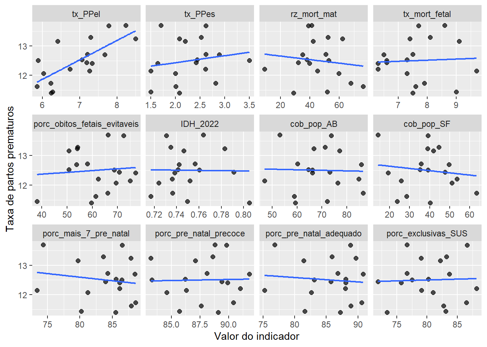
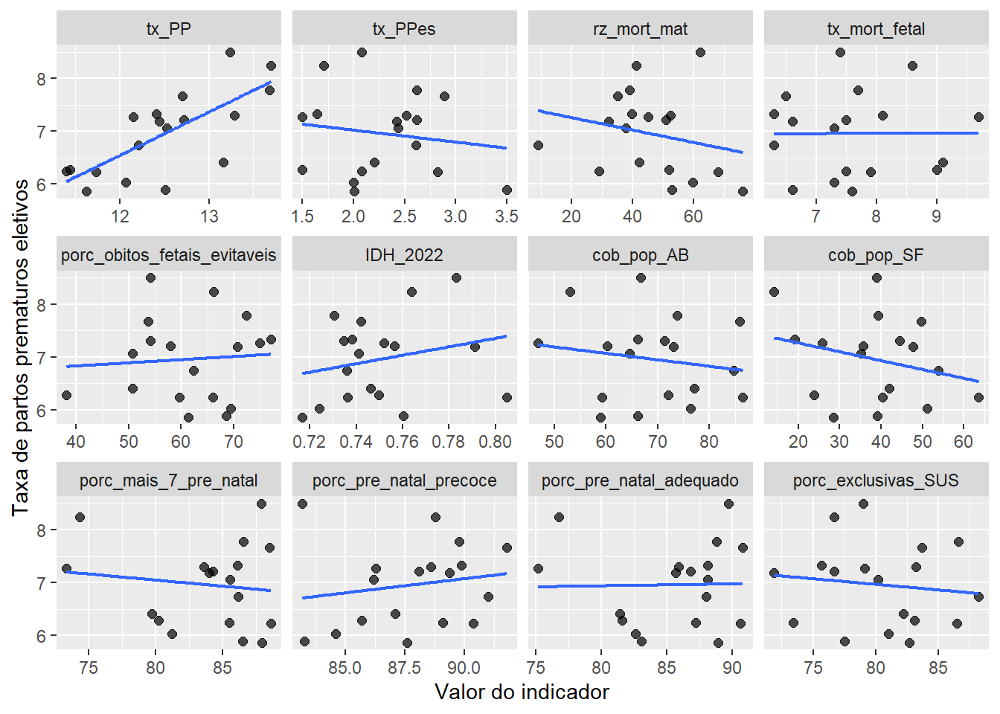
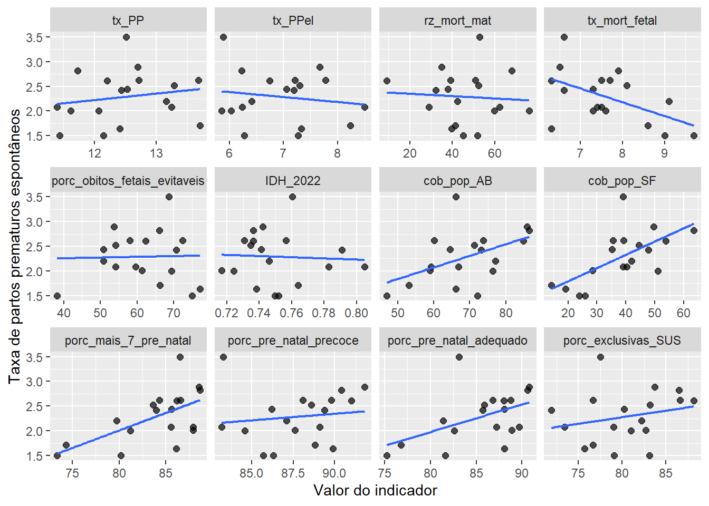

| Trabalho de parto induzido | Cersárea antes do trabalho de parto | Resultado do parto |
|---|---|---|
| Não | Não | Espontâneo |
| Não | Sim | Eletivo |
| Sim | Não | Eletivo |
| Sim | Sim | Eletivo |
| Sem informação | Sem informação | Não tem como avaliar |
| Sem informação | Não | Não tem como avaliar |
| Sem informação | Sim | Eletivo |
| Não | Sem informação | Não tem como avaliar |
| Sim | Sem informação | Eletivo |
Análise Correlação RRAS 2024
Métodos
Para a realização deste estudo, foram utilizados dados provenientes das bases oficiais do Sistema de Informação sobre Nascidos Vivos (SINASC), com foco nos dados de parturientes residentes no Estado de São Paulo, no ano de 2024. Realizando associações com dados fornecidos pelo Departamento de Gestão Interfederativa e Participativa (DGIP) da Secretaria Executiva (SE) do Ministério da Saúde (MS), e disponibilizados pelo Departamento de Monitoramento, Avaliação e Disseminação de Informações Estratégicas em Saúde (DEMAS) da Secretaria de Informação e Saúde Digital (SEIDIGI) (Ministério da Saúde 2025), também foi possível separar os registros em suas respectivas Redes Regionais de Atenção à Saúde (RRAS). A partir disso, realizou-se uma limpeza nos dados para identificar os casos em que a idade gestacional era maior ou igual a 22 semanas ou, nos casos em que não havia informação sobre a idade gestacional, identificar os casos em que o peso do recém-nascido era maior que 500 gramas. Dessa maneira, obteve-se os dados gerais dos nascidos vivos do Estado de São Paulo nos anos de 2012.
Para identificar os partos prematuros, aplicou-se um filtro de idade gestacional aos dados de nascidos vivos. Foram classificados como parto prematuro (PP) todos os nascimentos com idade gestacional entre 22 e 36 semanas. Na etapa seguinte, para distinguir entre partos prematuros espontâneos (PPes) e eletivos (PPel), foram utilizadas as variáveis STTRABPART, que indica a ocorrência de trabalho de parto induzido, e STCESPARTO, que informa se foi realizada cesárea antes do início do trabalho de parto.
Assim, caso não houvesse trabalho de parto induzido e não houvesse cesárea antes do início do trabalho de parto, os dados eram classificados como partos prematuros espontâneos. Os demais casos em que havia alguma informação sobre o trabalho de parto foram classificados como partos prematuros eletivos. A tabela a seguir apresenta detalhadamente a classificação dos tipos de parto.
As porcentagens utilizadas ao longo do relatório foram calculadas diretamente a partir dos valores absolutos obtidos nas filtragens anteriores. A porcentagem de partos prematuros em relação ao total de nascidos vivos foi obtida dividindo-se o número total de partos prematuros pelo total de nascidos vivos e multiplicando o resultado por 100. De maneira semelhante, esse processo foi aplicado para calcular as porcentagens de partos prematuros eletivos e partos prematuros espontâneos em relação ao total de nascidos vivos e ao total de partos prematuros, criando diferentes taxas para a análise. Empregando esse procedimento para todos esses casos, foi possível adicionar ao banco de dados informações relativas aos anos no Estado de São Paulo como um todo e também informações relativas aos anos e às RRAS separadamente.
A análise das associações entre as variáveis foi realizada por meio do coeficiente de correlação de Spearman. A escolha desse método se justifica por se tratar de uma medida não paramétrica, adequada para avaliar relações monotônicas entre variáveis, sem a necessidade de assumir normalidade na distribuição dos dados.
Foram calculadas as correlações entre os indicadores de prematuridade e variáveis sociodemográficas, de cobertura assistencial e de condições de saúde. Adicionalmente, foram obtidos os valores de p para cada correlação, permitindo a avaliação da significância estatística das associações observadas.
Para fins interpretativos, consideraram-se estatisticamente significativas as correlações com p-valor inferior a 0,05.
Correlação de Spearman
O coeficiente de correlação de Spearman (rho ou \(\rho\)) avalia a força e a direção da associação entre duas variáveis através de uma relação monotônica. Trata-se de um método não paramétrico, pois ele não exige a suposição de que os dados sigam uma distribuição normal, sendo baseado nos postos dos valores ao invés dos valores brutos (Spearman 1904).
O teste avalia as seguintes hipóteses estatísticas:
Hipótese nula (\(H_0\)): Não há associação monotônica entre as duas variáveis (as variáveis são independentes).
Hipótese alternativa (\(H_1\)): Existe uma associação monotônica entre as variáveis (os postos de uma variável tendem a aumentar ou diminuir em relação aos postos da outra).
Dentre os resultados fornecidos por esta análise, destacam-se as seguintes medidas:
O Coeficiente: Esta medida de associação varia entre -1 e 1. Um valor de 1 indica uma correlação monotônica positiva perfeita, -1 indica uma correlação monotônica negativa perfeita, e 0 indica a ausência de associação monotônica.
Significância (p-valor): Representa a probabilidade de observar uma correlação tão forte quanto a calculada caso a hipótese nula fosse verdadeira. Assim como em outros testes de associação, considera-se o resultado estatisticamente significativo quando o p-valor é menor que 0.05.
Para a realização das análises no ambiente R, utiliza-se a função nativa cor.test(), especificando o argumento method = "spearman". Esta função calcula tanto o coeficiente de correlação quanto a significância estatística necessária para a interpretação dos dados.
Os resultados são apresentados no relatório destacando o coeficiente de correlação, que indica a magnitude da associação, e o p-valor correspondente, onde p < 0.05 é considerado significativo e p < 0.01 é considerado altamente significativo para rejeitar a independência entre as variáveis.
Variáveis consideradas nas análise
Foram incluídas na análise variáveis relacionadas à prematuridade, características socioeconômicas e indicadores de assistência à saúde. A descrição das variáveis, suas respectivas abreviações e anos de referência está apresentada na Tabela 1.
Entre os indicadores de prematuridade, consideraram-se a taxa de partos prematuros, a taxa de partos prematuros eletivos e a taxa de partos prematuros espontâneos, sendo esses indicadores relativos ao ano de 2024.
No que se refere aos indicadores de saúde materna e fetal, foram analisadas a razão de mortalidade materna, a taxa de mortalidade fetal e a porcentagem de óbitos fetais potencialmente evitáveis, todos referentes ao ano de 2024. Como indicador socioeconômico, utilizou-se o Índice de Desenvolvimento Humano, calculado em 2022.
Além disso, foram incluídos indicadores de acesso e qualidade da atenção à saúde, como a cobertura populacional da atenção básica (2024), a cobertura da Estratégia Saúde da Família (2020), a porcentagem de mulheres com mais de sete consultas de pré-natal (2024), o início precoce do pré-natal (2024), a adequação do pré-natal (2024) e a porcentagem de usuárias exclusivas do Sistema Único de Saúde (2024).
Todas essas variáveis foram analisadas no nível das Redes Regionais de Atenção à Saúde (RRAS), considerando, majoritariamente, o ano de 2024.
| Variável | Abreviação | Ano |
|---|---|---|
| Taxa de partos prematuros | tx_PP | 2024 |
| Taxa de partos prematuros eletivos | tx_PPel | 2024 |
| Taxa de partos prematuros espontâneos | tx_PPes | 2024 |
| Razão de mortalidade materna | rz_mort_mat | 2024 |
| Taxa de mortalidade fetal | tx_mort_fetal | 2024 |
| Porcentagem de óbitos fetais potencialmente evitáveis | porc_obitos_fetais_evitaveis | 2024 |
| Índice de Desenvolvimento Humano | IDH_2022 | 2022 |
| Cobertura populacional da atenção básica | cob_pop_AB | 2024 |
| Cobertura da Estratégia Saúde da Família | cob_pop_SF | 2020 |
| Porcentagem de mulheres com mais de sete consultas de pré-natal | porc_mais_7_pre_natal | 2024 |
| Início precoce do pré-natal | porc_pre_natal_precoce | 2024 |
| Adequação do pré-natal | porc_pre_natal_adequado | 2024 |
| Porcentagem de usuárias exclusivas do SUS | porc_exclusivas_SUS | 2024 |
Análise de correlação
Visão geral dos indicadores
Apresentam-se a seguir os gráficos e tabelas de correlação, assim como os gráficos de dispersão e suas respectivas interpretações, com ênfase nos indicadores relacionados à prematuridade.

[Aqui dá para adicionar os comentarios relativos as váriaveis que não são de prematuridade]
Indicador taxa de partos prematuros
| Indicador | Valor-p | Coeficiente de correlação |
|---|---|---|
| Taxa de partos prematuros eletivos | 0.0006 | 0.7276 |
| Taxa de partos prematuros espontâneos | 0.2121 | 0.3090 |
| Razão de mortalidade materna | 0.7109 | -0.0939 |
| Taxa de mortalidade fetal | 0.7597 | 0.0776 |
| Porcentagem de óbitos fetais potencialmente evitáveis | 0.7945 | -0.0661 |
| Índice de Desenvolvimento Humano | 0.7540 | 0.0795 |
| Cobertura populacional da atenção básica | 0.9319 | 0.0217 |
| Cobertura da Estratégia Saúde da Família | 0.7170 | -0.0918 |
| Porcentagem de mulheres com mais de sete consultas de pré-natal | 0.7664 | -0.0753 |
| Início precoce do pré-natal | 0.9514 | 0.0155 |
| Adequação do pré-natal | 0.9481 | -0.0165 |
| Porcentagem de usuárias exclusivas do SUS | 0.9287 | 0.0227 |

Indicador taxa de partos prematuros eletivos
| Indicador | Valor-p | Coeficiente de correlação |
|---|---|---|
| Taxa de partos prematuros | 0.0006 | 0.7276 |
| Taxa de partos prematuros espontâneos | 0.8354 | -0.0527 |
| Razão de mortalidade materna | 0.2128 | -0.3086 |
| Taxa de mortalidade fetal | 0.9708 | 0.0093 |
| Porcentagem de óbitos fetais potencialmente evitáveis | 0.7850 | 0.0692 |
| Índice de Desenvolvimento Humano | 0.3854 | 0.2178 |
| Cobertura populacional da atenção básica | 0.7538 | -0.0795 |
| Cobertura da Estratégia Saúde da Família | 0.2953 | -0.2611 |
| Porcentagem de mulheres com mais de sete consultas de pré-natal | 0.7789 | -0.0712 |
| Início precoce do pré-natal | 0.3451 | 0.2363 |
| Adequação do pré-natal | 0.6418 | 0.1177 |
| Porcentagem de usuárias exclusivas do SUS | 0.7600 | -0.0774 |

Indicador taxa de partos Prematuros espontâneos
| Indicador | Valor-p | Coeficiente de correlação |
|---|---|---|
| Taxa de partos prematuros | 0.2121 | 0.3090 |
| Taxa de partos prematuros eletivos | 0.8354 | -0.0527 |
| Razão de mortalidade materna | 0.7013 | -0.0972 |
| Taxa de mortalidade fetal | 0.1505 | -0.3532 |
| Porcentagem de óbitos fetais potencialmente evitáveis | 0.6208 | -0.1251 |
| Índice de Desenvolvimento Humano | 0.7196 | -0.0910 |
| Cobertura populacional da atenção básica | 0.0444 | 0.4788 |
| Cobertura da Estratégia Saúde da Família | 0.0083 | 0.6016 |
| Porcentagem de mulheres com mais de sete consultas de pré-natal | 0.0086 | 0.5995 |
| Início precoce do pré-natal | 0.1786 | 0.3318 |
| Adequação do pré-natal | 0.0444 | 0.4788 |
| Porcentagem de usuárias exclusivas do SUS | 0.1678 | 0.3397 |

References
Ministério da Saúde. 2025. “Macrorregiões e Regiões de Saúde.” https://infoms.saude.gov.br/extensions/SEIDIGI_DEMAS_MACRORREGIOES/SEIDIGI_DEMAS_MACRORREGIOES.html.
Spearman, Charles. 1904. “The Proof and Measurement of Association Between Two Things.” The American Journal of Psychology 15 (1): 72–101. https://doi.org/10.2307/1412159.